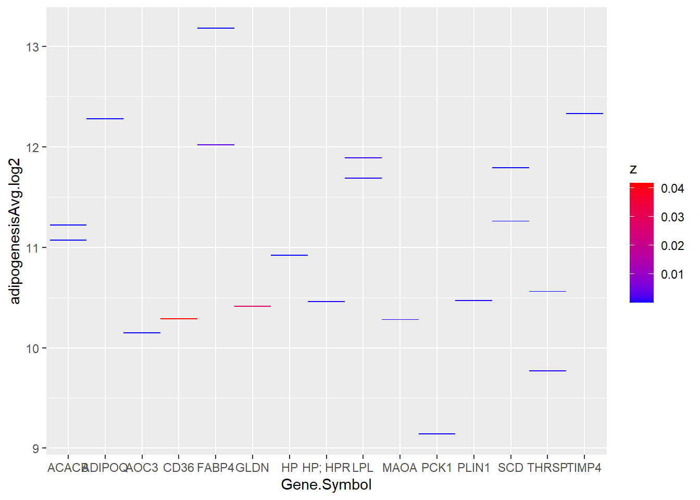
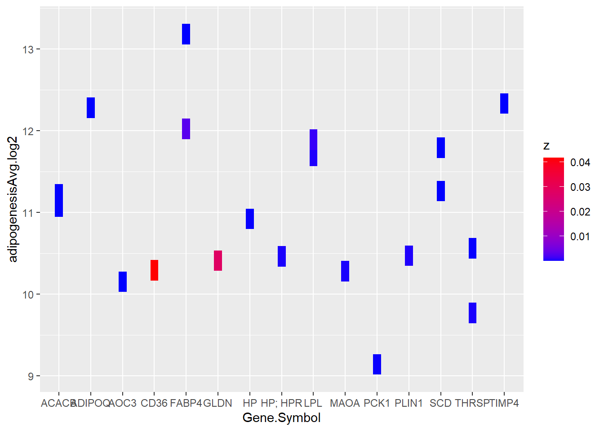
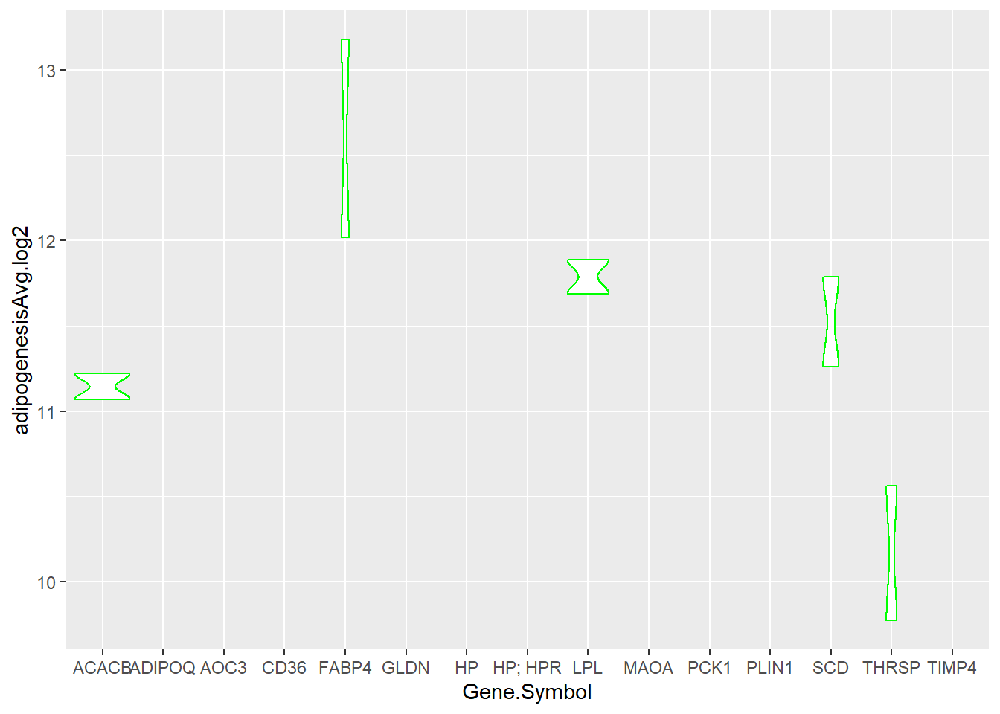
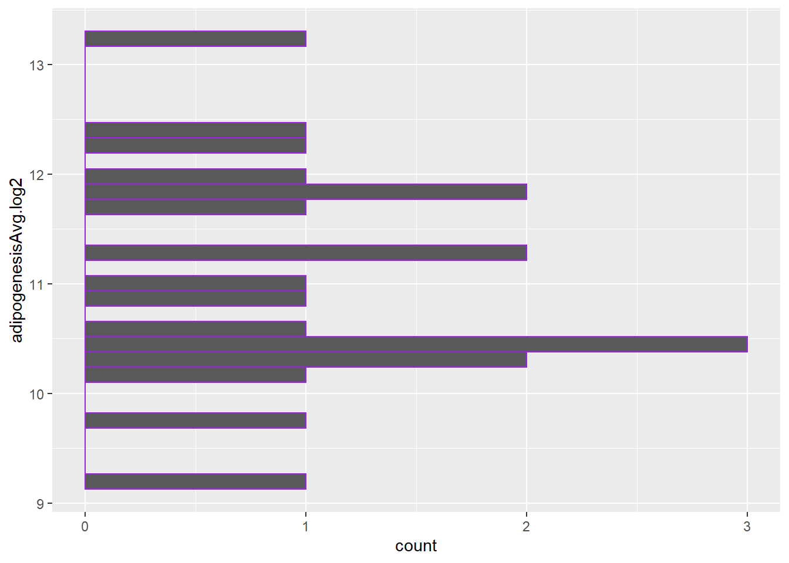

library(tidyverse)hmk_04
loading of the tidyverse library
step1: reading of data file hmk directory
step 2: representation of pvalue in the form of tiles using geom_tile. the x axis represents the gene symbol and its corresponding p value plotted when the cells are differentited into adipocytes
experiment <- read_csv(file = "C:/Users/ngogia/Documents/classes_2022/micr_575/hmk/my_data.csv")Rows: 20 Columns: 8
── Column specification ────────────────────────────────────────────────────────
Delimiter: ","
chr (3): ID, Gene.Symbol, Description
dbl (5): adipogenesisAvg.log2, controlAvg.log2, Fold.Change, P.val, FDR P.val
ℹ Use `spec()` to retrieve the full column specification for this data.
ℹ Specify the column types or set `show_col_types = FALSE` to quiet this message.glimpse(experiment)Rows: 20
Columns: 8
$ ID <chr> "207175_at", "203548_s_at", "203980_at", "235978_…
$ adipogenesisAvg.log2 <dbl> 12.28, 11.69, 13.18, 12.02, 11.89, 10.56, 10.15, …
$ controlAvg.log2 <dbl> 3.05, 2.71, 4.49, 3.35, 3.47, 2.95, 2.96, 4.76, 2…
$ Fold.Change <dbl> 600.18, 502.98, 412.70, 407.82, 342.93, 196.15, 1…
$ P.val <dbl> 5.81e-07, 4.00e-04, 7.73e-06, 2.90e-03, 1.10e-03,…
$ `FDR P.val` <dbl> 0.0079, 0.0715, 0.0235, 0.1386, 0.0972, 0.0358, 0…
$ Gene.Symbol <chr> "ADIPOQ", "LPL", "FABP4", "FABP4", "LPL", "THRSP"…
$ Description <chr> "adiponectin, C1Q and collagen domain containing"…z <- experiment$P.val
plot1 <- ggplot(experiment) +
geom_tile(aes(x = Gene.Symbol, y = adipogenesisAvg.log2, fill = z)) +
scale_fill_gradient(low="blue", high="red")
print(plot1)
To test whether I could change the shape of the tiles in the data which is described above.
plot2 <- ggplot(experiment) +
geom_tile(aes(x = Gene.Symbol, y = adipogenesisAvg.log2, fill = z),
width = 0.25 , height = 0.25) +
scale_fill_gradient(low="blue", high="red")
print(plot2)
Representation of the above data in form of a violin plot.
plot3 <- ggplot(experiment) +
geom_violin(aes(x = Gene.Symbol, y = adipogenesisAvg.log2 ),
color = "green")
print(plot3)Warning: Groups with fewer than two data points have been dropped.
Groups with fewer than two data points have been dropped.
Groups with fewer than two data points have been dropped.
Groups with fewer than two data points have been dropped.
Groups with fewer than two data points have been dropped.
Groups with fewer than two data points have been dropped.
Groups with fewer than two data points have been dropped.
Groups with fewer than two data points have been dropped.
Groups with fewer than two data points have been dropped.
Groups with fewer than two data points have been dropped.
using the geom_histogram to represent the data in the form of a histogram
plot4 <- ggplot(experiment) +
geom_histogram(aes(y = adipogenesisAvg.log2), color = "purple")
print(plot4)`stat_bin()` using `bins = 30`. Pick better value with `binwidth`.